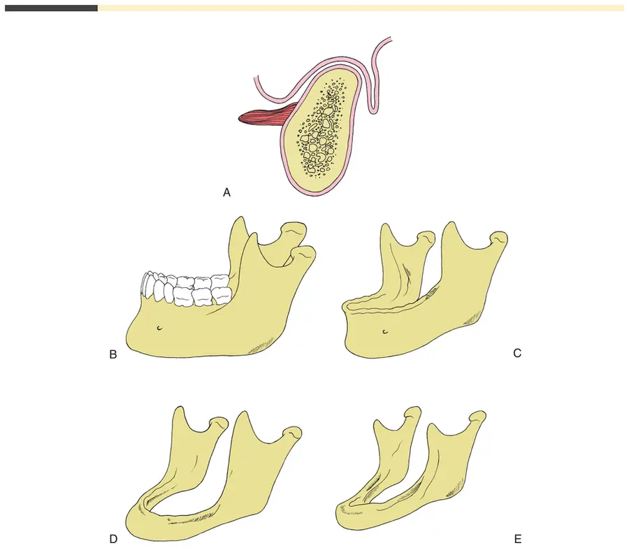
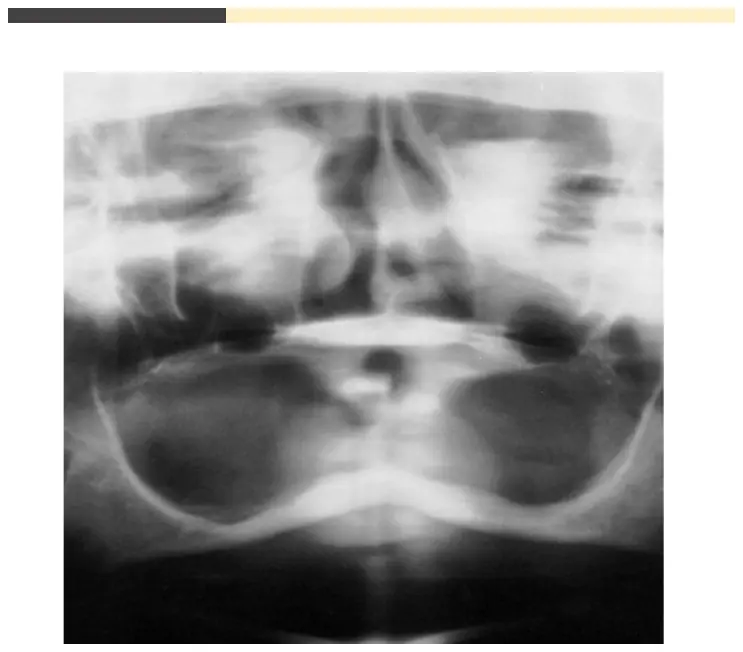

نسخه استخراجشده؛ ترجمه یا تأیید علمی انجام نشده است. وضعیت: captured
پس از از دست رفتن دندانهای طبیعی، تغییرات استخوانی فکها بیدرنگ آغاز میشوند. چون استخوان آلوئولار دیگر به تنشهای واردشده در این ناحیه از سوی دندانها و لیگامان پریودنتال پاسخ نمیدهد، استخوان شروع به تحلیل رفتن میکند.

و الگویش: الگوی مشخص تحلیل در یک بیمار معین غیرقابل پیشبینی است، چون تنوع بزرگی میان افراد وجود دارد. در بسیاری بیماران این فرایند پس از مدتی تثبیت میشود، حال آنکه در دیگران ادامهی فرایند سرانجام به از دست رفتن کامل استخوان آلوئولار و استخوان بازال زیرین میانجامد.
و دو تشدیدکننده: نتایج این تحلیل با پوشیدن دنچر تسریع میشوند، و گرایش دارند مندیبل را شدیدتر از ماگزیلا درگیر کنند — بهعلت سطح کمتر و توزیع نامساعدتر نیروهای اکلوزال.
و عوامل سیستمیک مؤثر بر تحلیل: ناهنجاریهای تغذیهای، بیماریهای سیستمیک استخوان مانند استئوپروز، اختلال عملکرد اندوکرین، یا هر وضعیت سیستمیک دیگری که بر متابولیسم استخوان اثر بگذارد.
و عوامل موضعی: تکنیکهای آلوئولوپلاستی بهکاررفته هنگام برداشتن دندان، و ترومای موضعی همراه با از دست رفتن استخوان آلوئولار. و پوشیدن دنچر هم میتواند به تحلیل ریج کمک کند، بهعلت انطباق نامناسب دنچر با ریج یا توزیع ناکافی نیروهای اکلوزال.
و دو راهی که ساختار صورت نقش میگیرد:
و پیامد بلندمدت این عوامل روی هم: از دست رفتن ریج آلوئولار استخوانی، افزایش فضای بینقوسی، افزایش تأثیر بافت نرم پیرامون، کاهش ثبات و گیر پروتز، و افزایش ناراحتی از انطباق نامناسب پروتز. و در شدیدترین موارد تحلیل، افزایش معناداری در خطر شکستگی خودبهخودی مندیبل وجود دارد.
و هدف جراحی پیشپروتزی، در یک جمله: ساختن ساختارهای حمایتی مناسب برای قرار دادن بعدی دستگاههای پروتزی.
و آنچه جراحی پیشپروتزی سنتی بر آن تمرکز دارد: حفظ فرم ریج آلوئولار، افزون بر حفظ روابط ایدهآل فک بیدندان، عمق کام و وستیبول، فرم توبروزیته، و لثهی کراتینیزه، و پرهیز از آسیب یا فشرده کردن دستهی عصبی-عروقی.
و یک تغییر پارادایم که باید بر آن تأکید کرد: استفادهی رو به افزایش از ایمپلنت، پارادایم برنامهریزی درمان را تغییر داده است. و پزشک باید پیش از کشیدن دندانها تشخیص دهد که آیا بیمار قرار است ایمپلنت را بیدرنگ یا در آینده دریافت کند — چون قرار دادن برنامهریزیشده یا فوری ایمپلنت پس از کشیدن دندان، برنامهریزی متفاوتی در اعمال جراحی پیشپروتزی میطلبد.
و در هر حال، تمرکز پزشک همچنان بر همان یک چیز است: حداکثر حفظ بافت سخت و نرم برای نگه داشتن ارتفاع و عرض آلوئول و فک. و یادت باشد: بافتهای دهانی پس از از دست رفتن، بهسختی جایگزین میشوند.
آلوئولوپلاستی ساده: پس از بلند کردن موکوپریوست، یک رانژور میتواند برای برداشتن بخش عمدهی ناحیهی تیز سطح فوقانی مندیبل به کار رود؛ سپس سوهان استخوان برای صاف کردن سطح فوقانی استفاده میشود، و پس از شستوشوی فراوان، ناحیه با بخیهی پیوسته یا منقطع بسته میگردد.

ولی یک هشدار مهم پیش از هر برداشتن استخوانی: پیش از برداشتن هر استخوانی، باید بازسازی فرم مناسب ریج با اعمال پیوند، بهطور جدی در نظر گرفته شود.
آلوئولوپلاستی اینتراسپتال یا تکنیک دین — جایگزینی برای برداشتن کورتکس: این تکنیک شامل برداشتن استخوان اینتراسپتال و جاگذاری مجدد استخوان کورتیکال لبیال است، بهجای برداشتن نواحی بیشازحد یا نامنظم کورتکس لبیال.
و کجا بهترین کاربرد را دارد؟ در ناحیهای که ریج کانتور نسبتاً منظم و ارتفاع کافی دارد ولی آندرکاتی ارائه میکند.
و تکنیکش: با فرز یا استئوتوم واردشده از راه ناحیهی کشیدن دیستال، کورتکس لبیال بدون سوراخ شدن مخاط لبیال شیار زده میشود. و فشار انگشتی روی سمت لبیال ریج برای تعیین کامل شدن برش استخوانی و اطمینان از آسیب ندیدن مخاط ضروری است. گاهی برشهای عمودی کوچک در دو انتهای صفحهی کورتیکال لبیال، جاگذاری مجدد قطعهی شکسته را تسهیل میکنند.
و پس از جاگذاری: هر ناحیهی اندک نامنظمی استخوانی با سوهان کانتور میشود، مخاط آلوئولار با بخیهی منقطع یا پیوسته نزدیک میگردد، و اسپلینت یا دنچر فوری با لاینر نرم گذاشته میشود تا موقعیت استخوانی را تا ترمیم اولیه حفظ کند.
و دو مزیتش: برجستگی لبیال ریج میتواند بدون کاهش معنادار ارتفاع ریج در آن ناحیه کم شود، و اتصال پریوستی به استخوان زیرین هم میتواند حفظ گردد.
و عیب اصلیاش — که مستقیماً به ایمپلنت مربوط میشود: کاهش ضخامت ریج که آشکارا با این عمل رخ میدهد. و اگر فرم ریج باقیمانده پس از این نوع آلوئولوپلاستی بیشازحد نازک باشد، میتواند مانع قرار دادن ایمپلنت در آینده شود.
توروس ماگزیلاری: از تشکیل اگزوستوز استخوانی در ناحیهی کام ساخته میشود، و منشأش نامشخص است.
و یک عدد شیوع: توروسها در ۲۰ درصد جمعیت زنان یافت میشوند، که تقریباً دو برابر میزان شیوعشان در مردان است. و میتوانند شکلها و پیکربندیهای متعددی داشته باشند، از یک برجستگی صاف منفرد تا تودهی استخوانی مولتیلوکولار و پایهدار.
و کِی مشکلساز میشوند؟ وقتی دندانهای ماگزیلا حاضرند، مشکلات اندکی میسازند و تنها گاهی با تکلم تداخل میکنند یا از ترومای مکرر به کام زخمی میشوند. ولی وقتی از دست رفتن دندانها ساخت دنچر کامل یا پارسیل را ضروری میکند، توروسها اغلب با طراحی و عملکرد مناسب پروتز تداخل مییابند.
و قاعدهی تصمیم: تقریباً همهی توروسهای بزرگ ماگزیلا باید پیش از ساخت دنچر کامل یا پارسیل برداشته شوند. و توروسهای کوچکتر اغلب میتوانند باقی بمانند، چون با ساخت یا عملکرد پروتز تداخل نمیکنند.
ولی سه استثنا: حتی توروسهای کوچک هم وقتی نامنظماند، آندرکات شدید دارند، یا در ناحیهای هستند که سیل خلفی کام انتظار میرود، برداشتن را ضروری میسازند.
و بیحسی و برش توروس ماگزیلا: بلاکهای دوطرفهی پالاتین بزرگ و انسیزیو بهعلاوهی انفیلتراسیون موضعی، بیحسی لازم را فراهم میکنند. و معمولاً برشی خطی در خط وسط توروس با برشهای رهاکنندهی عمودی مایل در یک یا دو انتها لازم است.
و یک احتیاط تکراری: چون مخاط این ناحیه بسیار نازک است، در بلند کردن بافت از استخوان زیرین باید دقت شود — کاری که بهویژه وقتی توروسها مولتیلوکولارند دشوار است.
توروس مندیبولار: برجستگیهای استخوانی سمت لینگوال مندیبل که معمولاً در ناحیهی پرمولر رخ میدهند. منشأشان نامعلوم است و رشدشان میتواند بهآهستگی بزرگ شود.
و کِی برداشته میشوند؟ گاهی توروسهای بسیار بزرگ با تکلم طبیعی یا عملکرد زبان حین غذا خوردن تداخل میکنند، ولی این توروسها بهندرت وقتی دندانها حاضرند نیاز به برداشتن دارند. و پس از برداشتن دندانهای پایین و پیش از ساخت دنچر پارسیل یا کامل، برداشتنشان میتواند برای تسهیل ساخت دنچر لازم شود.
و تکنیکش: تزریقهای دوطرفهی لینگوال و آلوئولار تحتانی بیحسی کافی میدهند. و برشی روی ستیغ ریج باید زده شود که ۱ تا ۱٫۵ سانتیمتر فراتر از هر انتهای توروس امتداد یابد.
و یک نکتهی مهم در موارد دوطرفه: وقتی توروسهای دوطرفه همزمان برداشته میشوند، بهتر است نوار کوچکی از بافت در خط وسط میان امتداد قدامی دو برش متصل باقی بماند.
و چرا؟ باقی گذاشتن این بافت به حذف تشکیل بالقوهی هماتوم در کف قدامی دهان کمک میکند و بیشترین بخش وستیبول لینگوال را در ناحیهی قدامی مندیبل حفظ مینماید.
و دربارهی مالت و استئوتوم: وقتی توروس پایهی کوچک و پایهدار دارد، مالت و استئوتوم میتوانند برای جدا کردن توروس از سمت داخلی به کار روند — ولی استفاده از فرز میتواند تکنیک کنترلشدهتری در برابر مالت و استئوتوم باشد، بهعلت ترومای بالقوه به ساختارهای آناتومیک درون کف دهان؛ و این بهویژه وقتی صادق است که پزشک تجربهی کمی با استئوتوم دارد.
و محافظت: زبان و مخاط کف دهان باید با رتراکتور کوچک و کانتوردار مانند رتراکتور سلدین کنار زده و محافظت شوند. و پکهای گاز گذاشتهشده در کف دهان و نگهداشتهشده برای چند ساعت، عموماً در کاهش ادم و تشکیل هماتوم پس از عمل سودمندند.